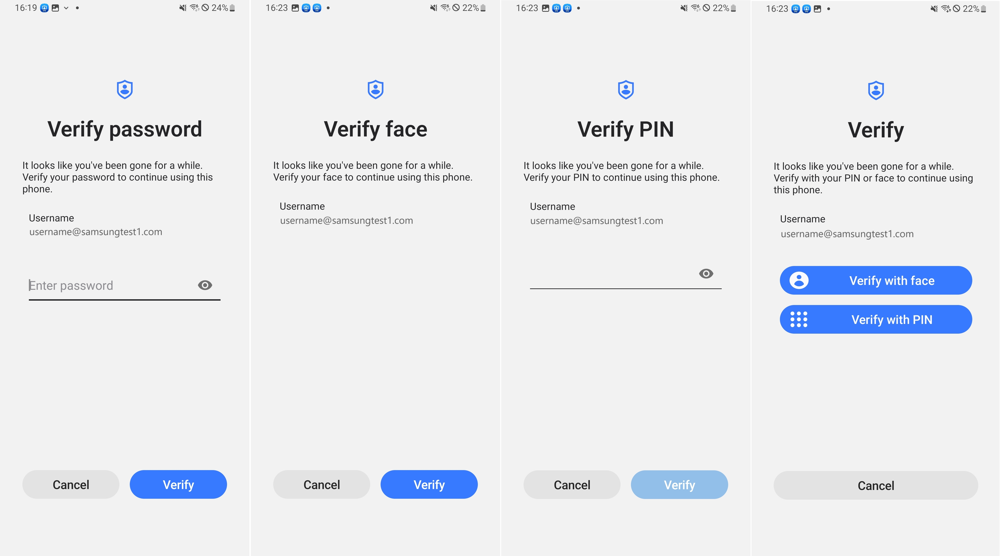

Configure authentication methods
Last updated April 9th, 2025
Knox Authentication Manager offers three different authentication methods:
- Manual authentication — Users enter their identity provider credentials.
- PIN only authentication — Users enter a PIN.
- PIN+Face authentication — Users first enter a PIN, then scan their face.
Device users must authenticate their identity when initially signing in to the Knox Authentication Manager app. If reverification is enabled, they must also authenticate their identity when signing back into a locked device.
You can set reverification methods independently of sign in authentication modes. This allows your users to sign-in to Knox Authentication Manager with one authentication method, and reverify their sign-in with another, if desired.
Configure sign in authentication methods
The Main sign in method policy allows you to determine how users initially sign-in to Knox Authentication Manager at the start of a session.
To configure the sign in authentication method:
- When configuring app policies in your UEM console, navigate to Manage sign in controls.
- Select your desired Main sign in method.
- Depending on your selected sign in method, you may need to set additional policies:
- If you select PIN+Face as your authentication method, read the privacy notice listed by the following policy, and select Yes if you agree.
- If you select PIN+Face or PIN only as your authentication method, set a Main sign in PIN length.
- Push the profile to your devices.
- (Optional) You can switch authentication methods if desired.
Configure reverification methods
If the Use KAM reverification to unlock device policy is set to True, users must reverify their sign-in to Knox Authentication Manager on a locked device. This applies to:
- Devices timed out after a period of inactivity.
- Devices locked using the power button with the Use KAM authentication to unlock device policy set to True.
Reverification policies aren’t applicable if your UEM configuration is Microsoft Intune with Managed Home Screen (MHS) or Omnissa Workspace ONE with launcher.

To configure the reverification method:
- When configuring app policies in your UEM console, navigate to Manage KAM behavior.
- Set Use KAM reverification to unlock device to True.
- Select your desired Reverification method.
- If set to default, users will reverify using the authentication mode set by the Main sign in method policy.
- (Optional) To display the name of the current user on a locked device’s reverification screen, set the Show username on reverification screen policy to True.
- Push the profile to your devices.
If the Reverification method conflicts with the Main sign in method, an error occurs and the authentication mode set by the Main sign in method policy is used by default. If you’re configuring policies for Knox Authentication Manager v1.8 and higher, the error is displayed in the UEM’s feedback channel.
On this page
Is this page helpful?